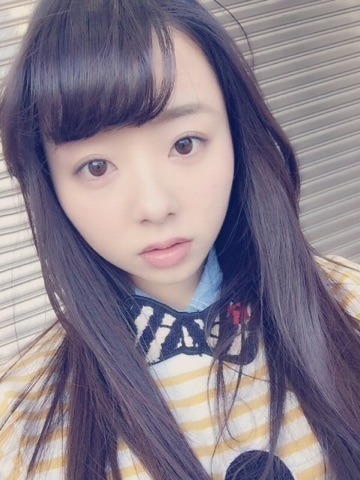
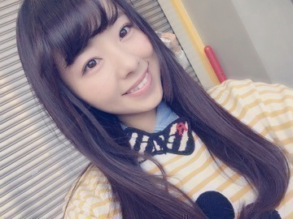
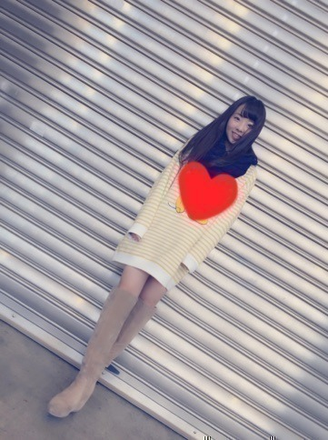
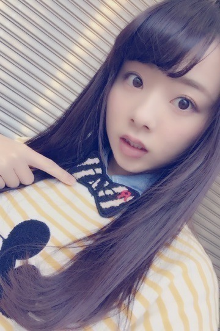
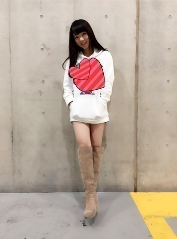
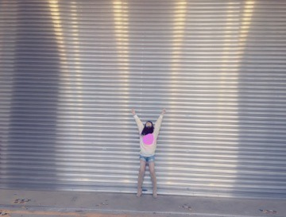
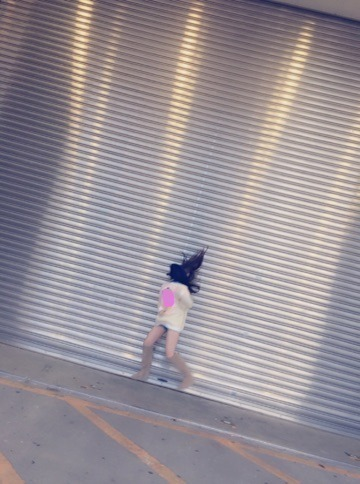
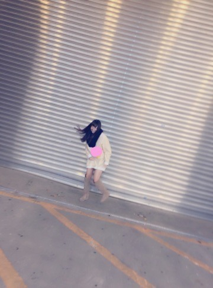

| 2015/02 01 Sun | 川村真洋 blogがキャラクター ものNGだと知らなか ったの（ ｉ _ ｉ ） まに❤️ |
こんにちわ。 まにだよ？

早い？もう2月、
風がひんやりして，とっても寒いね。
ニコ

そしてそして，昨日は握手会でした！！
皆ありがとう。本当に楽しかったよ❤️
私キャラクター物のパーカーやトレーナーが大好きなの。
だから4部はミッキー♩♩
5部はアラレちゃんガッちゃん♩♩
めっちゃ可愛いの。。でもね，でもね，，，
キャラクターものblogは載せるのNGみたい（ ｉ _ ｉ ）
だからー、 こんな感じで載せます（＾ω＾）

ミッキートレーナー。
黄と白のボーダーに 紺色のストールは合うの❤️ 良かったら参考に...f^_^）ぁ
RCWBのトレーナー。
ローリーズファームのベージュニーハイブーツ。
で，ストールを外したら,,,,，
シャツにりぼん。

りぼんの『R』はRottyのRかな？へへ
実はこのりぼん 「13日の金曜日」のMVの時に使用した物だよ。
画質荒い... 付けてるの分かるかな？
13金の私服撮影は楽しかった（＾ω＾）
でね,5部は アラレちゃん・ガッちゃん♩

もーーー。 スタンプ押しちゃったらただの白のパーカーじゃん（ ｉ _ ｉ ） そんな時もある❤️
ポジティブ セイ？ポジティブ。
今回載せた写真以外にも沢山あるのね、
だから全部755とモバメに貼るね（＾ω＾）
良かったら明日までには貼っとくから755とか覗いてねぇ。
七瀬との写真は次のblogに貼る！
わー。

結構いい写真撮れた。

おっとと。

皆だいすき。
ばいばい。まにより,,,,,,❤️